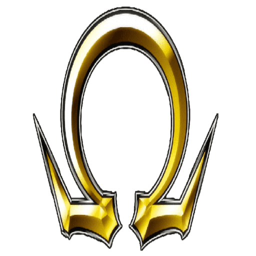

Início
Dúvidas
Os Personagens
Curiosidades
Surpresa
Seja Bem-Vindo! aqui abordaremos alguns tópicos sobre Saint Seiya
Hoje iremos desmistificar alguns conceitos estranhos dos fãs e responder algumas dúvidas, fique online e nos acompanhe e que o cosmo queime no seu coração
Digite aqui!:
Acompanhe a gente nesta jornada começaremos falando um pouco sobre o que é Saint Seiya e como surgiu, Saint seiya é um anime/mangá lançado nos anos 80 sua primeira volta as ruas foi em 1985 quando Masami Kurumada lançou o 1° mangá no japão, já o anime veio mais precisamente em 1986 um ano após o mangá e foi um fenômeno principalmente no brasil, onde teve milhares de crianças e adolescentes assistindo pela extinta rede manchete. os lendários cavaleiros de bronze como conhecemos aqui, fazem uma jornada épica para proteger saori kido(atena) e eles fazem o impossível para mantê-la segura, mas a verdadeira jornada começa quando o grande mestre ordena que os cavaleiros de prata e ouro matem saori mas o que não sabiam era que estavam sendo manipulados por saga de gêmeos após batalhas mortais tudo se resolve mas encrencas aoarecem de novo quando poseidon e hades reencarnam na terra.